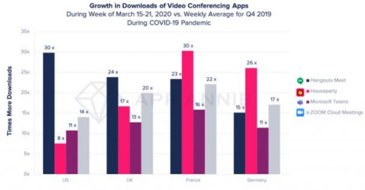

9 De los salones a las pantallas, el nuevo rostro de la educación tradicional
Palabras clave: Zoom, Meet, educación, pandemia..
9.1 Introducción
A través de plataformas como Zoom o Meet que evolucionaron durante la pandemia fue que el sector educativo pudo mantener en contacto a profesores y alumnos para que pudieran continuar con sus clases a distancia, a pesar de los desafíos iniciales sobre el desconocimiento de las herramientas por parte del profesor o la falta de una computadora e internet en casa del alumno.
Otras como Classroom o Moodle que se especializan en la distribución del material educativo más que en la interacción en vivo con el profesor, tambien fueron importantes ya que permitían la entrega de tareas y la realización de exámenes por medios de sus plataformas interactivas que facilitaban la entrega y calificacion de actividades.
9.2 Artículo
El ciclo escolar 2020 comenzó como siempre, pero dos meses después, la manera tradicional de impartir clases, donde un catedrático llegaba a un salón, era recibido por sus alumnos, impartía su contenido y los alumnos convivían entre ellos, dio un giro radical. La pandemia obligó a cerrar todas las escuelas y universidades del país para evitar contagios, así los profesores enfrentaron su primer gran desafío: ¿cómo continuar dando clases sin que sus alumnos estuvieran presentes?
Cada profesor se las ingenió para establecer algún canal de comunicación con sus alumnos, con la intervención de los padres en el caso de las escuelas primarias. Plataformas como WhatsApp, Messenger y Facebook ya existían, pero se utilizaban principalmente para socializar. Compartir contenidos educativos era posible, pero el seguimiento personal a los alumnos como se hacía en los salones de clases era un nuevo problema. Hallar plataformas virtuales donde los profesores pudieran reunirse con sus alumnos, encender una cámara para verlos, hablar con ellos y resolver dudas era el nuevo desafío.
Plataformas como FaceTime, WhatsApp, Google Duo y Messenger permitían realizar videollamadas, pero no a gran escala, otras como Skype, Zoom y Google Hangout eran más utilizadas en el ramo empresarial.
Zoom: inicialmente fundada para reuniones corporativas, en 2019 tenía alrededor de 10 millones de usuarios, no estaba preparada para recibir mas de 300 millones de personas para 2020, de alli que tuvo que escalar a la nube para soportar su gran demanda y hoy en día está situada como la empresa líder del sector de videollamadas.
Google Meet: Es la evolución de Google Hangout, una aplicación de mensajería y videollamadas que tambien llegó a más de 300 millones de usuarios luego de la pandemia, este al recibir gran demanda del ramo educativo mejoró su entorno para adaptarse a las necesidades educativas, permitiendo el uso de preguntas, grupos de trabajo y pizarrón, entre otras herramientas, lo que mejoró significativamente la interacción del profesor con los alumnos.
En la siguiente imagen se observa como crecieron las descargas de aplicaciones como Meet, Teams y Zoom en marzo del 2020 respecto al primer cuatrimestre del 2019 y se observa que en el caso de Meet solo en Estados Unidos las descargas se multiplicaron por 30.

Figura 9.1: Crecimiento de las descargas de aplicaciones de videoconferencia 2020 vs 2019. Foto de TechSpot, 2020.
Los profesores ya contaban con las plataformas para impartir sus clases como Zoom y Meet, podían tener a un grupo de alumnos recibiendo su clase desde sus casas, pero surgían otras incógnitas, ¿Cómo realizar exámenes?, ¿Cómo dejar y recibir tareas? Realizar las tareas a mano y enviar una captura por WhatsApp al profesor fue una de las primeras técnicas utilizadas.
Herramientas como Classroom, Canvas y Moodle resuelven este tipo de problemas, cada uno tiene la opción de enrolar a sus estudiantes, asignar una tarea, realizar foros de interacción para presentar dudas y demás. Classroom es una herramienta gratuita que permite tener el rol de estudiante y profesor. Moodle es una herramientas mas avanzada y un poco compleja ya que ofrece opciones de personalización que permite tener un control de alumnos avanzado, exámenes bien estructurados, foros, tareas, material multimedia, presentaciones de clases, etc.
De esta forma y al disponer de una variedad de plataformas que permiten interactuar con otras personas y colaborar en el proceso fue que la educación no se quedó estancada en tiempos de pandemia y se pudo continuar con una convivencia relativamente normal, después de este suceso, algunos establecimientos decidieron mantener estas herramientas activas en sus instituciones educativas, ya que permiten una mejor colaboración y distribución de material educativo entre sus estudiantes .
9.3 Conclusiones
La educación a través de plataformas que originalmente estaban creadas para ámbitos empresarias y que evolucionaron para adaptarse al ámbito educativo nos muestran que todo puede cambiar, asi como el modelo de educación tradicional cambió y ahora permite a personas en cualquier punto geográfico con acceso a internet asistir a una clase y convivir con sus compañeros tambien trae nuevos retos como la capacitación del profesor para que aprenda a utilizar las herramientas disponibles, la actualización de temas y metodologías de enseñanza para que las clases sean intuitivas y no perder la atención del alumno, asi como la inclusión del padre de familia para que pueda aprender el uso de las herramientas y poder supervisar a su hijo desde casa, el modelo educativo cambió y tambien trae nuevos retos.
9.4 Referencias
[1] Dávila Morán, Roberto Carlos, Henri Emmanuel López Gómez, Pierre Chipana Loayza, Tomasa Verónica Cajas Bravo, e Ilda Nadia Monica de la Asunción Pari Bedoya. 2022. “Empleo de Google Meet y la formación universitaria en estudiantes de una universidad privada de Arequipa.” Conrado, 18(88): 181–190. scielo.sld.cu
[2] Vera, Fernando. 2021. “Impacto de las plataformas de videoconferencia en la educación superior en tiempos de COVID-19.” Transformar, 2(1): 41–57. revistatransformar.cl
[3] Portillo, Rodrigo. 2020. “¿Cómo se explica el éxito de Zoom durante la pandemia?” Marketing Insider Review (blog), 13 de septiembre de 2020. marketinginsiderreview.com
[4] TechSpot. 2020. “Ilustración 2: crecimiento de las descargas de aplicaciones de videoconferencia 2020 vs 2019.” 31 de marzo de 2020. techspot.com
{kind=link}